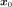
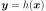
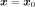
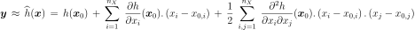
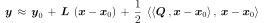
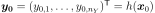
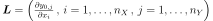
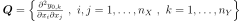
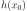

QuadraticTaylor¶
- class QuadraticTaylor(*args)¶
Second order polynomial response surface by Taylor expansion.
- Available constructors:
QuadraticTaylor(center, function)
- Parameters
- centersequence of float
Point  where the Taylor expansion of the function
 is performed.
is performed.- function
Function Function
to be approximated.
See also
Notes
The approximation of the model response  around a specific set of input parameters may be of interest. One may then substitute
for its Taylor
expansion at point . Hence is replaced with a first
or second-order polynomial  whose evaluation is inexpensive,
allowing the analyst to apply the uncertainty anaysis methods.
whose evaluation is inexpensive,
allowing the analyst to apply the uncertainty anaysis methods.We consider here the second order Taylor expansion around .

Introducing a vector notation, the previous equation rewrites:

where
 is the vector model response evaluated at ;
 is the current set of input parameters ;
is the current set of input parameters ; is the transposed Jacobian matrix evaluated at ;
 is the transposed Hessian matrix.
Examples
>>> import openturns as ot >>> formulas = ['x1 * sin(x2)', 'cos(x1 + x2)', '(x2 + 1) * exp(x1 - 2 * x2)'] >>> myFunc = ot.SymbolicFunction(['x1', 'x2'], formulas) >>> myTaylor = ot.QuadraticTaylor([1, 2], myFunc) >>> myTaylor.run() >>> responseSurface = myTaylor.getMetaModel() >>> print(responseSurface([1.2,1.9])) [1.13655,-0.999155,0.214084]
Methods
Get the center.
Accessor to the object's name.
Get the constant vector of the approximation.
getId()Accessor to the object's id.
Get the function.
Get the gradient of the function at .
Get an approximation of the function.
getName()Accessor to the object's name.
Get the hessian of the function at .
Accessor to the object's shadowed id.
Accessor to the object's visibility state.
hasName()Test if the object is named.
Test if the object has a distinguishable name.
run()Perform the Quadratic Taylor expansion around .
setName(name)Accessor to the object's name.
setShadowedId(id)Accessor to the object's shadowed id.
setVisibility(visible)Accessor to the object's visibility state.
- __init__(*args)¶
- getCenter()¶
Get the center.
- Returns
- center
Point Point where the Taylor expansion of the function is performed.
- center
- getClassName()¶
Accessor to the object’s name.
- Returns
- class_namestr
The object class name (object.__class__.__name__).
- getConstant()¶
Get the constant vector of the approximation.
- Returns
- constantVector
Point Constant vector of the approximation, equal to .
- constantVector
- getId()¶
Accessor to the object’s id.
- Returns
- idint
Internal unique identifier.
- getLinear()¶
Get the gradient of the function at .
- Returns
- gradient
Matrix Gradient of the function
at the point (the
transposition of the jacobian matrix).
- gradient
- getMetaModel()¶
Get an approximation of the function.
- Returns
- approximation
Function An approximation of the function
by a Quadratic Taylor expansion
at the point .
- approximation
- getName()¶
Accessor to the object’s name.
- Returns
- namestr
The name of the object.
- getQuadratic()¶
Get the hessian of the function at .
- Returns
- tensor
SymmetricTensor Hessian of the function
at the point .
- tensor
- getShadowedId()¶
Accessor to the object’s shadowed id.
- Returns
- idint
Internal unique identifier.
- getVisibility()¶
Accessor to the object’s visibility state.
- Returns
- visiblebool
Visibility flag.
- hasName()¶
Test if the object is named.
- Returns
- hasNamebool
True if the name is not empty.
- hasVisibleName()¶
Test if the object has a distinguishable name.
- Returns
- hasVisibleNamebool
True if the name is not empty and not the default one.
- run()¶
Perform the Quadratic Taylor expansion around .
- setName(name)¶
Accessor to the object’s name.
- Parameters
- namestr
The name of the object.
- setShadowedId(id)¶
Accessor to the object’s shadowed id.
- Parameters
- idint
Internal unique identifier.
- setVisibility(visible)¶
Accessor to the object’s visibility state.
- Parameters
- visiblebool
Visibility flag.